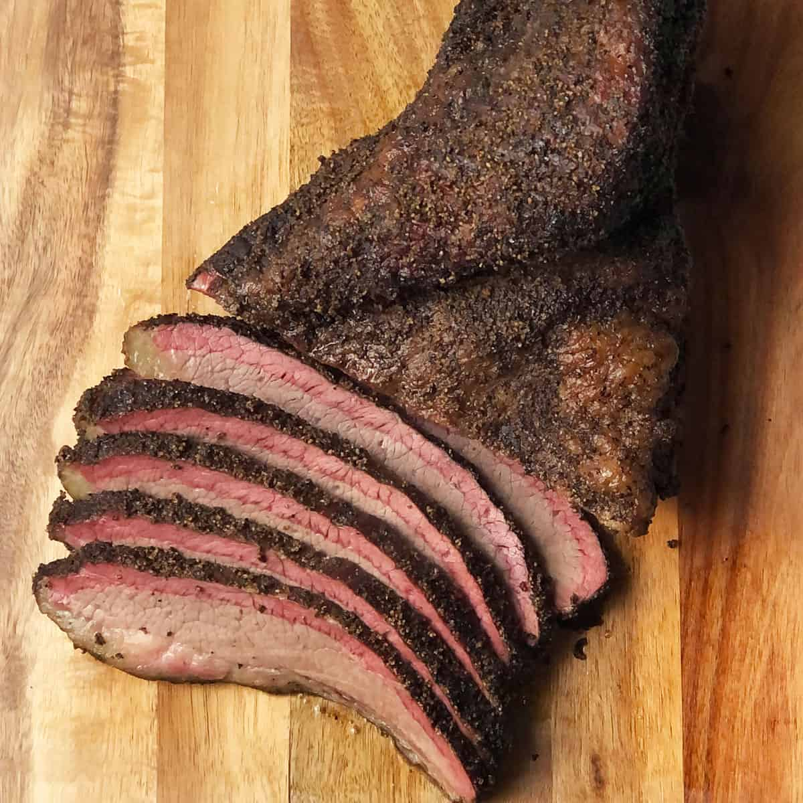

Brisket is a cut of meat from the breast or lower chest of beef or veal. It is known for its rich flavor and tenderness when cooked properly. Brisket is often slow-cooked or smoked to break down the tough connective tissues, resulting in a delicious and tender dish that can be served in various ways, such as sliced, shredded, or chopped.